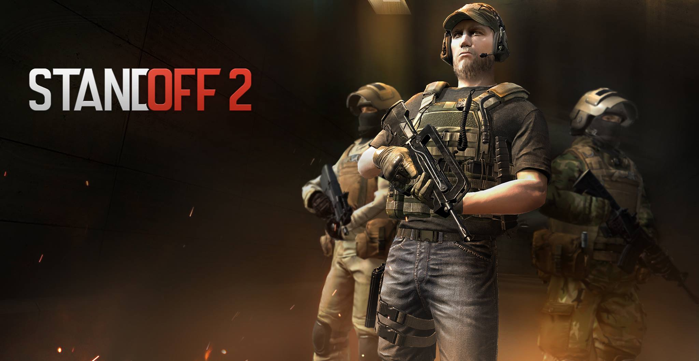
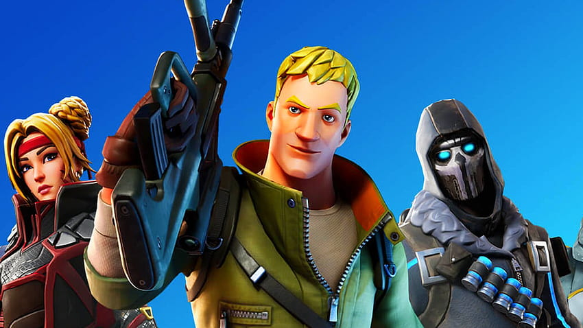

Standoff 2 é um jogo de tiro em primeira pessoa disponÃvel para Android e iOS (iPhone e iPad). Com mais de 200 milhões de jogadores em todo o mundo, o jogo oferece uma experiência envolvente de batalhas táticas e tiroteios dinâmicos no gênero de tiro multiplayer gratuito.
Standoff 2 - Brasil (standoff2brasil.blogspot.com)
 O Minecraft é um jogo formado por blocos, criaturas e uma comunidade. Os blocos podem ser usados para transformar o mundo ou construir criações fantásticas. As criaturas podem ser inimigas ou aliadas, dependendo de seu estilo de jogo. Vivencie aventuras épicas sozinho ou com amigos, não há maneira errada de jogar.
O Minecraft é um jogo formado por blocos, criaturas e uma comunidade. Os blocos podem ser usados para transformar o mundo ou construir criações fantásticas. As criaturas podem ser inimigas ou aliadas, dependendo de seu estilo de jogo. Vivencie aventuras épicas sozinho ou com amigos, não há maneira errada de jogar.
A não ser que você cave direto para baixo.
Sobre o Minecraft | Minecraft
O que é o Fortnite e por que ele está em todo lugar? Seu sucesso não é algo que aconteceu da noite para o dia, mas se tornou a sensação da indústria de jogos. É um dos tÃtulos mais lucrativos do mercado atualmente. Crianças e adultos se divertem com batalhas frenéticas que pode envolver até 100 jogadores por partida, e danças que fazem do jogo um fenômeno.Â
O que é Fortnite? Aprenda tudo sobre este fenômeno dos games (mktesports.com.br)

 Grand Theft Auto V é umÂ
Grand Theft Auto V é umÂ